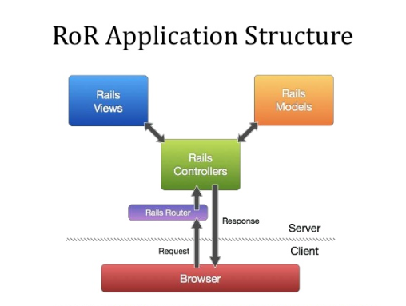
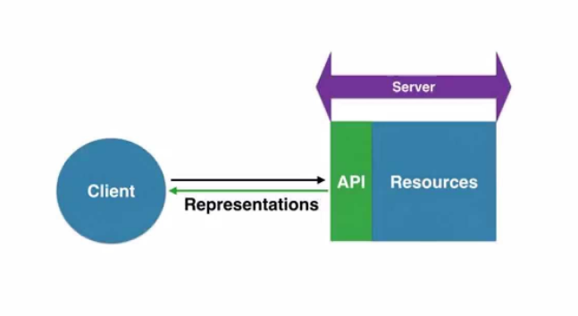
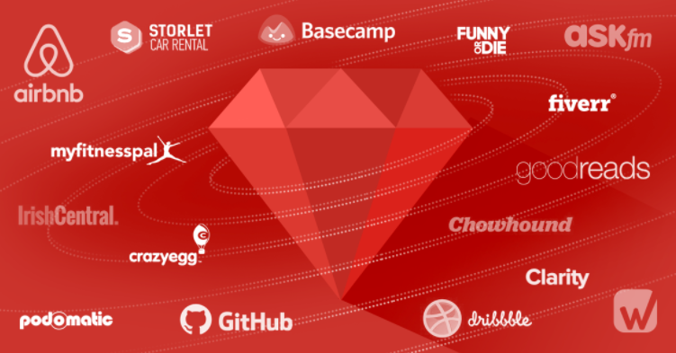

Ruby On Rails, my programming language
As developers we usually have one or two favorite languages. Those with whom we feel comfortable working; those who defend swashcock in forums and discussions; that we know deeply and with which we are convinced that we can change the world, or at least, finish the project in time. I started programming at Ruby 2 years ago for a project and when I discovered Ruby on Rails some time later, I knew I had found my language.
Ruby is an object-oriented language created in 1993 by Yukihiro "Matz" Matsumoto, who combined elements of his favorite languages (Perl and Smalltalk, among others). The popularity of the language was growing and in 2004 David Heinenmeiser, from his experience building Basecamp with Ruby, shared his implementation of the MVC model: Ruby on Rails (RoR).
Why use RoR?
Mainly for its principles Convention over Configuration (convention over configuration) and Do not Repeat Yourself (do not repeat) that accelerate the development of applications and improve the productivity of developers.
The convention is a group of rules that to follow, you will not have to configure or worry about almost nothing in your application. For example: if there is a Customer class in your model, the table in the corresponding database will be called clients by default, the CRUD will be created automatically with everything necessary. Follow the convention and you will not have to spend time configuring relationships, models, queries, etc.
The second principle goes hand in hand: once you follow the convention, it is very quick to perform the most common tasks of a web application: reading and writing data in a single instruction.
Other advantages are:
100% designed for RESTful applications.
A large community with good support and endless bookstores, called gems. There is practically one for everything you need: authentication, payments, reports, third-party APIs, etc.
Clean and easy to read code makes working with multiple projects very easy.
Can I use Ruby on Rails?
To create and mainly web applications, but its REST approach makes it an excellent option to serve as backend and expose APIs, for mobile applications for example.
If you want some examples, look what companies like Airbnb, BaseCamp, GitHub or Shopify have created with RoR. The first versions of Twitter were built in Rails
